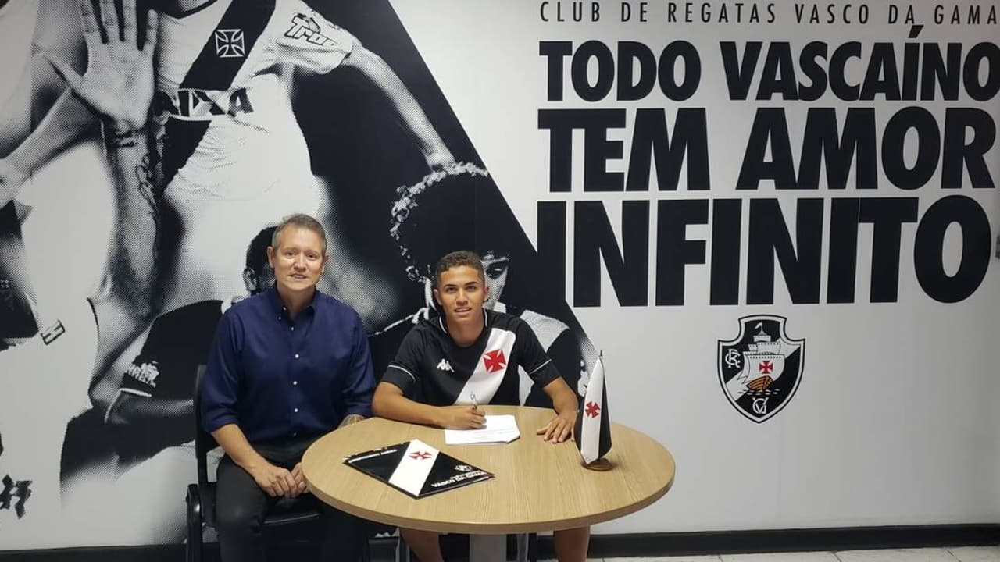

A API Agência Esportiva é uma empresa referência no mercado esportivo, reconhecida por sua trajetória sólida, ética e comprometimento com o sucesso de cada atleta que representa. Atuando há muitos anos no cenário do futebol, a API construiu uma reputação baseada na confiança, profissionalismo e resultados concretos, se tornando uma das principais agências do país no agenciamento e gerenciamento de carreiras de jogadores de futebol. Nosso trabalho vai muito além de simplesmente representar atletas: nós acreditamos em construir histórias de sucesso, lapidar talentos e abrir caminhos para que cada jogador alcance todo o seu potencial dentro e fora dos gramados. Com uma equipe altamente qualificada e apaixonada pelo esporte, a API oferece suporte completo em todas as etapas da carreira de um atleta, desde o início da sua formação até o auge profissional, cuidando de cada detalhe com dedicação e excelência. Trabalhamos com planejamento estratégico, assessoria de imagem, gestão de contratos, negociações nacionais e internacionais, marketing esportivo, acompanhamento psicológico e desenvolvimento de marca pessoal, tudo com o objetivo de garantir que nossos craques tenham uma carreira sólida, segura e duradoura. Nosso compromisso é com o crescimento, o reconhecimento e o sucesso de quem confia em nosso trabalho. Acreditamos que o futebol é muito mais do que um jogo — é uma paixão que move milhões de pessoas e transforma vidas, e é com essa visão que a API atua todos os dias, representando atletas que inspiram novas gerações e elevam o nome do esporte mundialmente. Nossa agência tem orgulho de gerenciar e impulsionar a carreira de diversos craques do futebol, atletas que brilham em grandes clubes e competições, levando o talento brasileiro e internacional para os principais palcos do mundo. A API entende que cada jogador é único, com sonhos, metas e desafios diferentes, e por isso desenvolve um atendimento personalizado, voltado para as necessidades específicas de cada um, criando estratégias que unem profissionalismo, visão de futuro e amor pelo futebol. Nosso diferencial está na proximidade com os atletas e suas famílias, no respeito pelas suas trajetórias e no compromisso com resultados reais e duradouros. Acreditamos que o sucesso é fruto de trabalho em equipe, dedicação e uma boa gestão, e é exatamente isso que oferecemos: uma parceria transparente, sólida e voltada para o crescimento constante. Ao longo de nossa caminhada, consolidamos parcerias com clubes, empresários e profissionais de renome, ampliando nossa presença no mercado e reforçando nosso papel como uma das agências mais respeitadas do futebol. A API Agência Esportiva é sinônimo de credibilidade, seriedade e paixão pelo que faz, e continuará atuando com o mesmo propósito que nos trouxe até aqui: revelar talentos, valorizar conquistas e construir carreiras de sucesso dentro do universo do futebol.
